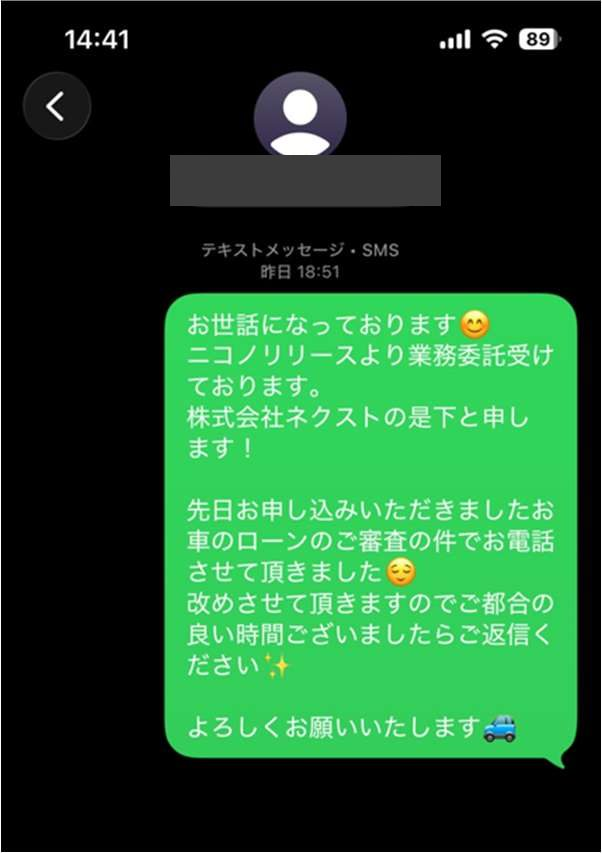

単元6
媒体別の受付
この単元のゴール案
媒体ごとの受付を一人でできる
含む内容：モビローン／MIC／クルマ王／カーエール（Lステップ）
この単元の詳しいマニュアルは作成予定です（サンプルは単元9・13・20）。
2-4媒体別の受付：モビローン
- 2-4-1
受付の考え方：受付方法が違っても、最後は公式LINEでつなぐ
- 2-4-2
公式LINEの問い合わせ：コールセンターの割振り後、割振り表で自店の担当分を確認して対応する
- LINE追加後に届く情報：名前、都道府県、電話番号、やり取りの方法
- 2-4-3
メール・電話の問い合わせ：まず架電し、担当者を名乗って購入相談か確認し、公式LINEへ誘導する
- 電話でIDは読み上げない。「SMSでIDを送る」か「モビローンを検索してLINEの緑ボタンを押す」と案内する
- 不在時はSMSで公式LINEへ誘導する（SMS文例あり）
- 電話で聞いた内容は記録し、LINEで同じ質問を繰り返さない
- 2-4-4
LINEのあいさつ：担当者を名乗り、購入の相談か確認する（文例1）
- 2-4-5
ローン審査への不安を聞く（文例2）
- 「はい」だけなら、具体的な事情を聞く（文例3）
- 具体的な相談があれば、内容に応じて確認・回答する
- 不安がなければ、無理に掘り下げず仮審査の提案へ
- 2-4-6
個別相談は1つずつ聞く（例：「今もお支払いが遅れていますか？」「いつ頃のお話ですか？」）
- 2-4-7
無料の仮審査を提案する（文例4）。「必ず通る」とは言わない
- 2-4-8
フォーム送付前に、CICなどの信用情報機関に照会・登録されることを伝える（文例5）
- 2-4-9
自店の審査フォームを送る（文例6）。2日以内の入力をお願いする
- 実際に車を使う方の申込みが必要
- 現住所と免許証・住民票等の住所が一致していることが条件
- 連帯保証人を付けられる場合は申し出てもらう（審査の選択肢が広がる）
- 送信後に「入力完了」と送ってもらう
- 2-4-10
所得資料が未準備の場合：後日提出できる審査ルートがあるときだけ追加文を送る
- 「未提出」と「提出できない」は区別して確認する
- 「すべての審査が資料不要」とは案内しない
- 2-4-11
入力後の共通案内（文例7）を必ず送り、了承の返信を確認してから審査に進む
- 審査結果は通常2〜3営業日
- 審査中のお願い：他店のローン申込、クレジットカードの新規申込、携帯の分割購入、電話番号の変更、引っ越しを控えてもらう
- 希望の車種を案内できない場合、車種変更を相談することがある
- 2-4-12
フォームに入力できない場合：LINEで直接回答してもらう（基本情報・家族・住まい・緊急連絡先・借入・仕事・希望条件）
- 取り扱いは平成25年式以降の国産車
- 月々の支払い可能額の目安：軽自動車2万円〜、普通車3万円〜
- 2-4-13
必要画像：免許証の表裏、給与明細（最新1か月）または確定申告書（前年分）、在留カードの表裏、健康保険の加入を確認できる書類（必要な場合）
- 源泉徴収票は給与明細の代わりにしない
- マイナンバーカードは表面のみ。個人番号は隠してもらう
- 2-4-14
電話ヒアリングの場合：聞いた内容は復唱し、聞き取れない項目を推測で入力しない
- 2-4-15
対応完了チェック（10項目）を終えたら、審査担当へ引き継ぐ
2-5媒体別の受付：MIC（ニコノリリースからの送客）
- 2-5-1
概要：ニコノリリースでオリコ・アプラスの審査に通らなかったお客様が送客される。新車・中古車の2種類
- 新車案件は「新車案件管理シート」、中古車案件は「案件管理シート」で確認
- 2-5-2
基本ルール：連絡・折り返し・審査結果の案内を放置しない。丁寧で落ち着いた言葉遣い
- 先方も見る「ネクスト様情報管理シート」には、審査先の詳細や否定的な表現を書かない
- 2-5-3
重複チェック：新車・中古車の両方のシートで名前を検索する
- 180日ルール：前回送客から180日以内の再問い合わせは対象外（新車↔中古車も含む）
- 2-5-4
Kintoneで案件を確認し、氏名と源泉を照合する。架電前に「対応店舗」「初期対応担当」を入力する
- 2-5-5
架電する。不在ならシートに「不在SMS」などと記録し、必要に応じてSMSを送る 図2-F

図2-FMIC：不在時に送るSMSの例 - 2-5-6
結果を記録する：不通／再アポ（次回予定を記録）／通電・情報取得（Kintoneに入力）／案内不要（商談前失注として理由を入力しクローズ）
- 2-5-7
審査結果をKintoneに入力する：審査担当、車種、年式、走行距離、審査金額、審査日、信販会社、結果、可決日、可決金額
- 結果の選び方：プレミアは「単独可決」か「シフト可決」、USSは「120以上可決」か「120未満可決」、その他は「可決」
- 2-5-8
初回架電トーク：ニコノリリースから業務委託を受けている「株式会社ネクストの〇〇」と名乗る。大手信販会社では引き受けが難しかったことを伝え、別のプランを案内できるか確認する
- 2-5-9
よくある質問の答え方：ホームページの車・金額・プランで買えるとは約束しない。金利は審査結果で変わると伝える
- 2-5-10
対応完了チェックリスト（11項目）
2-6媒体別の受付：クルマ王（九州への送客）
- 2-6-1
目的：クルマ王のLステップで審査フォームを入力したお客様の一部を九州側に送客し、審査する
- 2-6-2
アウトプラス：入力済みのお客様からランダムに抽出し、「アウトプラス様用情報管理シート」に記入する
- 2-6-3
九州側窓口（是下さん）：シートを確認して各部署に振り分け、受領日時と担当を記入する
- 対象外があれば、アウトプラスに補充人数を伝える。アウトプラスが同じルールで補充する
- 2-6-4
九州側の各部署：クルマ王の名前で連絡・審査する。文例2で了承を得てから審査する
- 2-6-5
可決したら、グループ会社のLINEへ移す
- 2-6-6
否決後の扱い
2-7媒体別の受付：カーエール（Lステップ）
- 2-7-1
お客様がLINEのリッチメニュー「仮審査はこちら」を押すと、Step1（簡易フォーム：名前、ふりがな、都道府県、電話番号、職業、年収）のURLが自動で届く
- 2-7-2
Step1の送信通知を確認したら、Step2（詳細フォーム）の案内を定型文で送る
- 定型文は「カーエール担当の〇〇」と名乗り、審査結果をお伝えする日数を案内する。〇〇は必ず自分の名前に書き換えてから送る
- 2-7-3
Step2の入力完了通知を確認し、回答に不備がないか見て審査へ進む（3章）
- 2-7-4
Step2が止まったら、返信を待たずに電話に切り替える
教育担当者のチェック
押すと印が付きます。この端末のブラウザにだけ保存されます。正式な記録は印刷したチェックリストに書いてください。